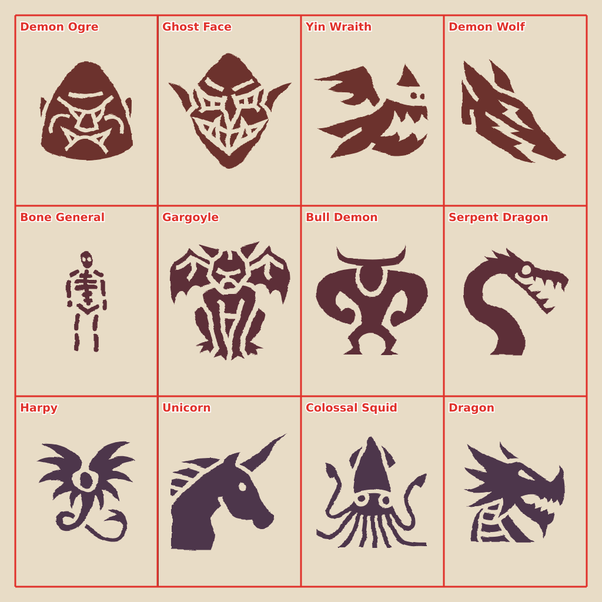
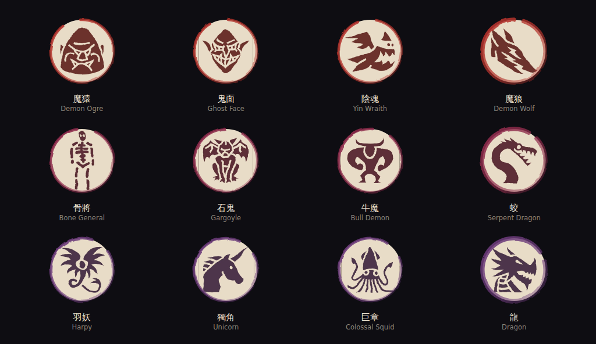

張
Four generations, not fifty-four. A free account hands out credits, and one credit is one square picture. So the unit of work stops being one creature and becomes one ruled page holding twelve of them. The cutting is mine.
Bruno: "não consigo gerar tantas imagens com os créditos gratuitos do gpt. consegues dar-me um prompt por batches e depois recortar as imagens e fazer a tua magia?"
數 What four credits buy
A creature is shown at about 120 pixels inside 牌 the plate. A panel of a 1024 sheet is 256. The detail was never going to survive the frame, so nothing is lost by drawing twelve at a time, and three sheets is the whole bestiary.
| Sheet | Holds | Grid | Save it as |
|---|---|---|---|
| 獸甲 Creatures, the first three realms | 12 panels | 4 by 3 | ink-sheets/beasts-a.png |
| 獸乙 Creatures, the middle three realms | 12 panels | 4 by 3 | ink-sheets/beasts-b.png |
| 獸丙 Creatures, the last three realms | 12 panels | 4 by 3 | ink-sheets/beasts-c.png |
| 境 The nine realms | 9 panels | 3 by 3 | ink-sheets/realms.png |
用 What you do, and what I do
| 1 | Open the image model. Paste one sheet prompt below. There is no opener to paste first: each sheet prompt carries the whole style itself, so a fresh chat is fine and a lost session costs nothing. |
| 2 | If it offers, attach 樣 the demonstration leaf further down as a reference picture. It shows the ruled grid better than the English does. |
| 3 | Save the square image it returns. Do not crop it, do not straighten it and do not cut anything out: the whole page, exactly as it came back. Name it after the sheet. |
| 4 | Send me the file, or drop it in ink-sheets/. |
| 5 | I run npm run slice. It measures where the rules
actually fell, cuts the twelve panels, trims the bare paper off each one, squares
it and writes it into the game. Then npm run pictures, and they are
in. |
| 6 | I send back 證 the proof: the sheet with every cut drawn on it, and the twelve panels in the game's own frame. A bad panel is redone alone, and one panel costs one credit. |
獸甲 Creatures, the first three realms
12 panels, 4 across and 3 down. Saved as
ink-sheets/beasts-a.png.
beast/rat.webpbeast/hound.webpbeast/frog.webpbeast/fox.webpbeast/serpent.webpbeast/mantis.webpbeast/bat.webpbeast/ape.webpbeast/beetle.webpbeast/owl.webpbeast/raven.webpbeast/crane.webp詞 The prompt
One single square image: a page from an old Chinese bestiary album, ruled into a grid of 4 columns by 3 rows, 12 panels in all. Draw the grid: thin dry ink rules, edge to edge, dividing the page into 12 equal rectangular panels with a narrow margin of bare paper around the outside. Every panel has exactly the same aged paper ground as every other one. Each panel holds one creature, centred, facing the viewer, head and body, filling most of its own panel. Nothing crosses a rule: no tail, no wing and no mist leaves the panel it belongs to. The panels, in reading order: Row 1, panel 1: mountain rat, alert, caught in the instant before it moves. Its one pigment is jade. Row 1, panel 2: wild hound, alert, caught in the instant before it moves. Its one pigment is jade. Row 1, panel 3: marsh frog, alert, caught in the instant before it moves. Its one pigment is jade. Row 1, panel 4: spirit fox, the guardian of its realm, huge and still, seen from slightly below. Its one pigment is jade. Row 2, panel 1: green serpent, alert, caught in the instant before it moves. Its one pigment is celadon. Row 2, panel 2: praying mantis, alert, caught in the instant before it moves. Its one pigment is celadon. Row 2, panel 3: blood bat, alert, caught in the instant before it moves. Its one pigment is celadon. Row 2, panel 4: stone ape, the guardian of its realm, huge and still, seen from slightly below. Its one pigment is celadon. Row 3, panel 1: iron beetle, alert, caught in the instant before it moves. Its one pigment is old bronze. Row 3, panel 2: night owl, alert, caught in the instant before it moves. Its one pigment is old bronze. Row 3, panel 3: blood raven, alert, caught in the instant before it moves. Its one pigment is old bronze. Row 3, panel 4: immortal crane, the guardian of its realm, huge and still, seen from slightly below. Its one pigment is old bronze. Style: classical Chinese ink painting on aged silk. Wet brush, visible strokes, ink bleeding into the fibre, large areas of empty paper. Muted mineral pigment only: jade green, gold leaf, cinnabar red, bone white, soot black. No neon, no glow, no rim light, no lens flare, no science fiction, no cyberpunk. Nothing emits light except a lantern or the moon. It should look like a plate from a bestiary somebody believed in six hundred years ago. No text, no letters and no characters anywhere. Again, and this matters more than anything else in this prompt: 12 panels, 4 across and 3 down, thin ink rules between them, the same paper in every panel, and no letters or characters anywhere on the page.
獸乙 Creatures, the middle three realms
12 panels, 4 across and 3 down. Saved as
ink-sheets/beasts-b.png.
beast/boar.webpbeast/wolf.webpbeast/vulture.webpbeast/tiger.webpbeast/crab.webpbeast/jellyfish.webpbeast/lizard.webpbeast/turtle.webpbeast/centipede.webpbeast/scorpion.webpbeast/worm.webpbeast/golem.webp詞 The prompt
One single square image: a page from an old Chinese bestiary album, ruled into a grid of 4 columns by 3 rows, 12 panels in all. Draw the grid: thin dry ink rules, edge to edge, dividing the page into 12 equal rectangular panels with a narrow margin of bare paper around the outside. Every panel has exactly the same aged paper ground as every other one. Each panel holds one creature, centred, facing the viewer, head and body, filling most of its own panel. Nothing crosses a rule: no tail, no wing and no mist leaves the panel it belongs to. The panels, in reading order: Row 1, panel 1: ironroot boar, alert, caught in the instant before it moves. Its one pigment is gold leaf. Row 1, panel 2: grey wolf, alert, caught in the instant before it moves. Its one pigment is gold leaf. Row 1, panel 3: ridge vulture, alert, caught in the instant before it moves. Its one pigment is gold leaf. Row 1, panel 4: thunder tiger, the guardian of its realm, huge and still, seen from slightly below. Its one pigment is gold leaf. Row 2, panel 1: giant crab, alert, caught in the instant before it moves. Its one pigment is amber. Row 2, panel 2: jellyfish, alert, caught in the instant before it moves. Its one pigment is amber. Row 2, panel 3: rock lizard, alert, caught in the instant before it moves. Its one pigment is amber. Row 2, panel 4: black turtle, the guardian of its realm, huge and still, seen from slightly below. Its one pigment is amber. Row 3, panel 1: iron centipede, alert, caught in the instant before it moves. Its one pigment is copper. Row 3, panel 2: venom scorpion, alert, caught in the instant before it moves. Its one pigment is copper. Row 3, panel 3: corpse worm, alert, caught in the instant before it moves. Its one pigment is copper. Row 3, panel 4: stone puppet, the guardian of its realm, huge and still, seen from slightly below. Its one pigment is copper. Style: classical Chinese ink painting on aged silk. Wet brush, visible strokes, ink bleeding into the fibre, large areas of empty paper. Muted mineral pigment only: jade green, gold leaf, cinnabar red, bone white, soot black. No neon, no glow, no rim light, no lens flare, no science fiction, no cyberpunk. Nothing emits light except a lantern or the moon. It should look like a plate from a bestiary somebody believed in six hundred years ago. No text, no letters and no characters anywhere. Again, and this matters more than anything else in this prompt: 12 panels, 4 across and 3 down, thin ink rules between them, the same paper in every panel, and no letters or characters anywhere on the page.
獸丙 Creatures, the last three realms
12 panels, 4 across and 3 down. Saved as
ink-sheets/beasts-c.png.
beast/ogre.webpbeast/goblin.webpbeast/wraith.webpbeast/direwolf.webpbeast/skeleton.webpbeast/gargoyle.webpbeast/minotaur.webpbeast/jiao.webpbeast/harpy.webpbeast/unicorn.webpbeast/squid.webpbeast/dragon.webp詞 The prompt
One single square image: a page from an old Chinese bestiary album, ruled into a grid of 4 columns by 3 rows, 12 panels in all. Draw the grid: thin dry ink rules, edge to edge, dividing the page into 12 equal rectangular panels with a narrow margin of bare paper around the outside. Every panel has exactly the same aged paper ground as every other one. Each panel holds one creature, centred, facing the viewer, head and body, filling most of its own panel. Nothing crosses a rule: no tail, no wing and no mist leaves the panel it belongs to. The panels, in reading order: Row 1, panel 1: demon ogre, alert, caught in the instant before it moves. Its one pigment is cinnabar. Row 1, panel 2: ghost face, alert, caught in the instant before it moves. Its one pigment is cinnabar. Row 1, panel 3: yin wraith, alert, caught in the instant before it moves. Its one pigment is cinnabar. Row 1, panel 4: demon wolf, the guardian of its realm, huge and still, seen from slightly below. Its one pigment is cinnabar. Row 2, panel 1: bone general, alert, caught in the instant before it moves. Its one pigment is plum. Row 2, panel 2: gargoyle, alert, caught in the instant before it moves. Its one pigment is plum. Row 2, panel 3: bull demon, alert, caught in the instant before it moves. Its one pigment is plum. Row 2, panel 4: serpent dragon, the guardian of its realm, huge and still, seen from slightly below. Its one pigment is plum. Row 3, panel 1: harpy, alert, caught in the instant before it moves. Its one pigment is imperial violet. Row 3, panel 2: unicorn, alert, caught in the instant before it moves. Its one pigment is imperial violet. Row 3, panel 3: colossal squid, alert, caught in the instant before it moves. Its one pigment is imperial violet. Row 3, panel 4: dragon, the guardian of its realm, huge and still, seen from slightly below. Its one pigment is imperial violet. Style: classical Chinese ink painting on aged silk. Wet brush, visible strokes, ink bleeding into the fibre, large areas of empty paper. Muted mineral pigment only: jade green, gold leaf, cinnabar red, bone white, soot black. No neon, no glow, no rim light, no lens flare, no science fiction, no cyberpunk. Nothing emits light except a lantern or the moon. It should look like a plate from a bestiary somebody believed in six hundred years ago. No text, no letters and no characters anywhere. Again, and this matters more than anything else in this prompt: 12 panels, 4 across and 3 down, thin ink rules between them, the same paper in every panel, and no letters or characters anywhere on the page.
境 The nine realms
9 panels, 3 across and 3 down. Saved as
ink-sheets/realms.png.
realm/1.webprealm/2.webprealm/3.webprealm/4.webprealm/5.webprealm/6.webprealm/7.webprealm/8.webprealm/9.webp詞 The prompt
One single square image: a page from an old Chinese bestiary album, ruled into a grid of 3 columns by 3 rows, 9 panels in all. Draw the grid: thin dry ink rules, edge to edge, dividing the page into 9 equal rectangular panels with a narrow margin of bare paper around the outside. Every panel has exactly the same aged paper ground as every other one. Each panel holds one wide landscape, seen from a great height, with the bottom of the panel almost empty. Nothing crosses a rule: no tail, no wing and no mist leaves the panel it belongs to. The panels, in reading order: Row 1, panel 1: an empty landscape for the realm called Qi Refining, mountains fading into mist, one cliff near the front, no people and no buildings. Its one pigment is jade. Row 1, panel 2: an empty landscape for the realm called Foundation, mountains fading into mist, one cliff near the front, no people and no buildings. Its one pigment is celadon. Row 1, panel 3: an empty landscape for the realm called Golden Core, mountains fading into mist, one cliff near the front, no people and no buildings. Its one pigment is old bronze. Row 2, panel 1: an empty landscape for the realm called Nascent Soul, mountains fading into mist, one cliff near the front, no people and no buildings. Its one pigment is gold leaf. Row 2, panel 2: an empty landscape for the realm called Spirit Severing, mountains fading into mist, one cliff near the front, no people and no buildings. Its one pigment is amber. Row 2, panel 3: an empty landscape for the realm called Void Refining, mountains fading into mist, one cliff near the front, no people and no buildings. Its one pigment is copper. Row 3, panel 1: an empty landscape for the realm called Unity, mountains fading into mist, one cliff near the front, no people and no buildings. Its one pigment is cinnabar. Row 3, panel 2: an empty landscape for the realm called Great Vehicle, mountains fading into mist, one cliff near the front, no people and no buildings. Its one pigment is plum. Row 3, panel 3: an empty landscape for the realm called Tribulation, mountains fading into mist, one cliff near the front, no people and no buildings. Its one pigment is imperial violet. Style: classical Chinese ink painting on aged silk. Wet brush, visible strokes, ink bleeding into the fibre, large areas of empty paper. Muted mineral pigment only: jade green, gold leaf, cinnabar red, bone white, soot black. No neon, no glow, no rim light, no lens flare, no science fiction, no cyberpunk. Nothing emits light except a lantern or the moon. It should look like a plate from a bestiary somebody believed in six hundred years ago. No text, no letters and no characters anywhere. Again, and this matters more than anything else in this prompt: 9 panels, 3 across and 3 down, thin ink rules between them, the same paper in every panel, and no letters or characters anywhere on the page.
樣 The demonstration leaf
This is not a painting: it is the game's own icons inked onto paper and ruled into the same grid, drawn at exactly the size a model returns. It exists so the cutter could be proved before a credit was spent, and it is the picture to attach to the prompt if the model takes one.

證 And the same leaf, cut
The red lines are where 刀 the cutter decided the rules were, measured off the picture rather than assumed. Every panel below it came out of the sheet above it with no hand in between.

